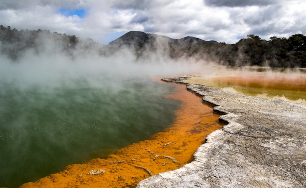
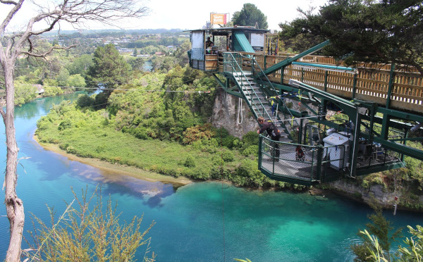
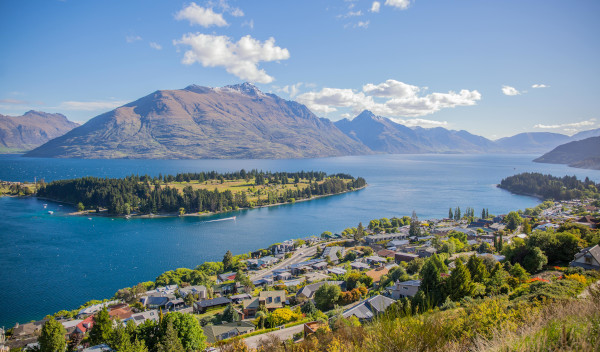
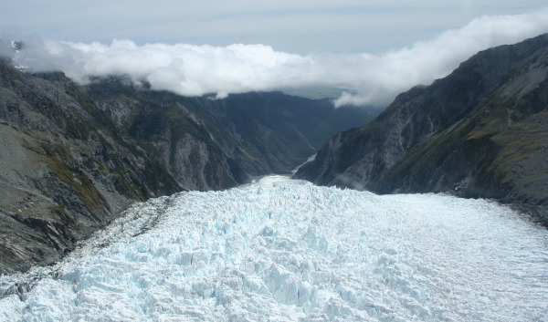

Nova Zelândia: A Terra das Paisagens Surreais e Aventuras
A Nova Zelândia, um país localizado na Oceania, é uma terra de contrastes e maravilhas naturais que cativam viajantes de todo o mundo. Com uma extensão que abrange desde as montanhas geladas dos Alpes do Sul até as praias ensolaradas da Ilha Norte, a Nova Zelândia oferece uma variedade de paisagens, ecossistemas e culturas que desafiam a imaginação e encantam a todos que o exploram.
Desde as grandes metrópoles até as comunidades rurais que preservam tradições milenares, a Nova Zelândia é um destino que oferece uma experiência de viagem única e inesquecível.
Documentação necessária
Para os viajantes brasileiros que desejam visitar a Nova Zelândia, é necessário providenciar alguns documentos e cumprir certos requisitos:
1. Passaporte: É necessário ter um passaporte válido. Verifique se seu passaporte tem uma validade de pelo menos três meses além da data de saída prevista da Nova Zelândia.
2. Visto: Os viajantes brasileiros não precisam de visto de turista para visitar a Nova Zelândia por até 90 dias. No entanto, é necessário obter uma Autorização Eletrônica de Viagem (Electronic Travel Authority - ETA) antes de viajar. A ETA pode ser solicitada online através do sistema oficial da imigração neozelandesa.
3. Passagem de retorno: É recomendado ter um comprovante de retorno ou de saída da Nova Zelândia para comprovar sua intenção de deixar o país dentro do período permitido.
4. Comprovação de meios financeiros: Embora não seja comumente solicitado, é aconselhável ter consigo comprovantes de meios financeiros suficientes para cobrir suas despesas durante a estadia na Nova Zelândia.
5. Seguro viagem: É altamente recomendado adquirir um seguro viagem que cubra despesas médicas e de emergência durante a sua estadia.
Idioma e comunicação
O idioma oficial e mais falado na Nova Zelândia é o inglês. Além do inglês, o país reconhece dois outros idiomas oficiais: o maori, que é a língua nativa do povo indígena maori, e a Língua de Sinais da Nova Zelândia (New Zealand Sign Language - NZSL).
Clima e Melhor Época para Viajar
- Clima: A Nova Zelândia tem um clima variado, com invernos rigorosos em algumas regiões e verões amenos em outras.
- Melhor Época: A melhor época para visitar depende da região. A primavera (setembro a novembro) e o outono (março a maio) são geralmente as épocas mais agradáveis, com climas mais amenos.
Moeda
A moeda oficial da Nova Zelândia é o dólar neozelandês (NZD).
Cartões de crédito e débito: São amplamente aceitos em praticamente todos os estabelecimentos comerciais, incluindo restaurantes, hotéis e lojas. No entanto, é sempre bom ter algum dinheiro em espécie para casos onde o uso de cartões não seja possível, como em mercados locais ou em áreas mais remotas.
Atrações Turísticas
1. Wai-O-Tapu

Fonte: Pixabay
Os maiores pontos turísticos da Nova Zelândia ligados à atividade geotermal estão localizados em Rotorua. A cidade, por si só já é uma atração à parte, pois exala cheiro de enxofre e tem vapor saindo por seus lagos e bueiros constantemente.
Em Rotorua, a maior concentração das diferentes formações geológicas geradas pela atividade térmica do solo fica em uma espécie de “parque temático”, o Wai-o-Tapu. De todas, a que mais se destaca é a Champange Pool, que cria uma das imagens mais conhecidas da Nova Zelândia.
2. Waikato

Fonte: Pixabay
Esse destino é certamente imperdível para os fanáticos por Senhor dos Anéis. É na região de Waikato que fica a famosa Hobbiton, que serviu de locação para a vila dos Hobbits nos filmes da franquia. Conhece-la é certamente uma atração imperdível para qualquer um que queria se sentir na Terra Média, mas a região também garante atrativos para quem não é tão fã assim. Lá, é possível encontrar uma das melhores gastronomias do país e você não vai se arrepender de visitar os ótimos bares, cafés e restaurantes - e muito menos de apreciar as verdejantes colinas ao redor.
3. Queenstown

Fonte: Pexels
Queenstown é um dos principais destinos neozelandeses, principalmente para os viciados em adrenalina. Os locais gostam, inclusive, de se referir à sua cidade como a capital de aventura do mundo.
Além de praticar o bungee jumping no lugar onde ele nasceu, você pode se arriscar esquiar nos Alpes do Sul ou se arriscar em algumas das tirolesas mais radicais do planeta. Depois que o seu coração já tiver se acelerado o bastante, você não pode deixar de explorar a incrível cena de bares, restaurantes, arte e as vinícolas da região.
4. Glaciar de Franz Josef

Fonte: Pixabay
Essa galeria conta com 29 km² de área de gelo e chega a 10 km de comprimento, sendo o ponto mais baixo a apenas 300 metros do nível do mar.
O primeiro ponto de observação dessa geleira é facilmente acessível por todos os turistas e por isso mesmo ele é muito visitado. Para chegar pela trilha até o ponto mais próximo do Franz Josef, será necessária uma caminhada de 45 minutos. O trajeto é leve, bem sinalizado e durante todo o caminho será possível apreciar o glaciar.